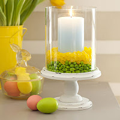

4 Simple EGG-stravagant Easter Centerpieces
April 1, 2011 By moms 1 Comment
Sweeten a candle display
 From: All You Magazine
Use the abundance of jelly beans to bring some color to the table. Place a glass hurricane on a plate
or pedestal. Center a pillar candle inside it. Fill the surrounding space 1″ high with one color of jellybeans,
then add a 1″ layer of a different color directly on top.
Peeps Easter Centerpiece
From: All You Magazine
Here’s what you’ll need:
- Two similarly shaped vases, one 3″ narrower than the other
- Peeps
- Jelly beans
- Flowers
- Insert the smaller vase inside the large.
- Layer jelly beans in the space between the two.
- Arrange Peeps on top of the jelly beans.
- Arrange your flowers
DIY Terra Cotta Easter Basket Centerpieces

From: Hostess Blog
If you’re looking for a quick & easy Easter craft/centerpiece idea, these Terra Cotta “Easter
Baskets” only take a few minutes and will look super cute on your Easter table! Added bonus:
they’re really inexpensive! All you need are small terra cotta pots in various sizes, scrapbook
paper, “grass” filler, and any embellishments you want to add (optional). Click here for complete
how to instructions
Splendor in the Grass

From: Goodhouse Keeping
A mini-cupcake holder rises to the occasion when it’s repurposed as a seasonal accent. Just
insert pint-size pots plus blades of wheatgrass from a health-food store, alternating daffodils
with dyed eggs


 Kerry says
Kerry says